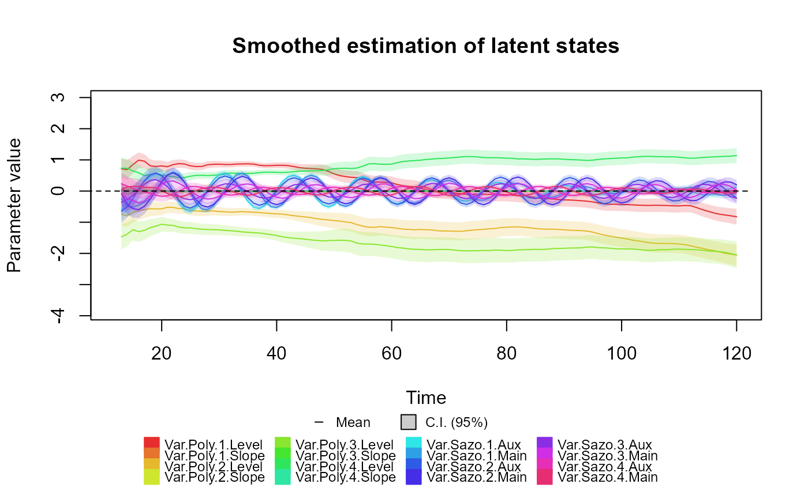

Creates a block for a (dynamic) regression for a covariate X_t.
Usage
regression_block(
...,
max.lag = 0,
zero.fill = TRUE,
name = "Var.Reg",
D = 1,
h = 0,
H = 0,
a1 = 0,
R1 = 9,
monitoring = rep(FALSE, max.lag + 1)
)
reg(
X,
max.lag = 0,
zero.fill = TRUE,
D = 0.95,
a1 = 0,
R1 = 9,
name = "Var.Reg"
)Arguments
- ...
Named values for the planning matrix.
- max.lag
Non-negative integer: An optional argument providing the maximum lag for the explanatory variables. If a positive value is provided, this block will create additional latent states to measure the lagged effect of X_t up until the given value. See WestHarr-DLM;textualkDGLM, subsection 9.2.2 item (3).
- zero.fill
boolean: A Boolean indicating if the block should fill the initial delay values with 0's. If TRUE and max.lag is positive, the block assumes that X_t=0 for all t<1. If FALSE, the block assumes the user will provide X_t for all t, such that X_t will have size t+propagation_size
- name
String: An optional argument providing the name for this block. Can be useful to identify the models with meaningful labels, also, the name used will be used in some auxiliary functions.
- D
Array, Matrix, vector or scalar: The values for the discount factors at each time. If D is a array, its dimensions should be n x n x t, where n is the order of the polynomial block and t is the length of the outcomes. If D is a matrix, its dimensions should be n x n and its values will be used for each time. If D is a vector or scalar, a discount factor matrix will be created as a diagonal matrix with the values of D in the diagonal.
- h
Matrix, vector or scalar: A drift to be add after the temporal evolution (can be interpreted as the mean of the random noise at each time). If a matrix, its dimension should be 2 x t, where t is the length of the series. If a vector, it should have size t, and each value will be applied to the first latent state (the one which affects the linear predictors) in their respective time. If a scalar, the passed value will be used for the first latent state at each time.
- H
Array, Matrix, vector or scalar: The values for the covariance matrix for the noise factor at each time. If H is a array, its dimensions should be n x n x t, where n is the order of the polynomial block and t is the length of the outcomes. If H is a matrix, its dimensions should be n x n and its values will be used for each time. If H is a vector or scalar, a discount factor matrix will be created as a diagonal matrix with the values of H in the diagonal.
- a1
Vector or scalar: The prior mean for the latent states associated with this block at time 1. If a1 is a vector, its dimension should be equal to the order of the polynomial block. If a1 is a scalar, its value will be used for all latent states.
- R1
Matrix, vector or scalar: The prior covariance matrix for the latent states associated with this block at time 1. If R1 is a matrix, its dimensions should be n x n. If R1 is a vector or scalar, a covariance matrix will be created as a diagonal matrix with the values of R1 in the diagonal.
- monitoring
Vector: A vector of flags indicating which variables should be monitored (if automated monitoring is used). Its size should be n. The default is that no variable should be monitored.
- X
Vector or scalar: An argument providing the values of the covariate X_t.
Value
A dlm_block object containing the following values:
FF Array: A 3D-array containing the regression matrix for each time. Its dimension should be n x k x t, where n is the number of latent states, k is the number of linear predictors in the model and t is the time series length.
FF.labs Matrix: A n x k character matrix describing the type of value of each element of FF.
G Matrix: A 3D-array containing the evolution matrix for each time. Its dimension should be n x n x t, where n is the number of latent states and t is the time series length.
G.labs Matrix: A n x n character matrix describing the type of value of each element of G.
G.idx Matrix: A n x n character matrix containing the index each element of G.
D Array: A 3D-array containing the discount factor matrix for each time. Its dimension should be n x n x t, where n is the number of latent states and t is the time series length.
h Matrix: The mean for the random noise of the temporal evolution. Its dimension should be n x t.
H Array: A 3D-array containing the covariance matrix of the noise for each time. Its dimension should be the same as D.
a1 Vector: The prior mean for the latent vector.
R1 Matrix: The prior covariance matrix for the latent vector.
var.names list: A list containing the variables indexes by their name.
max.lag Positive integer: Same as argument.
n Positive integer: The number of latent states associated with this block (2).
t Positive integer: The number of time steps associated with this block. If 1, the block is compatible with blocks of any time length, but if t is greater than 1, this block can only be used with blocks of the same time length.
k Positive integer: The number of outcomes associated with this block. This block can only be used with blocks with the same outcome length.
pred.names Vector: The name of the linear predictors associated with this block.
monitoring Vector: Same as argument.
type Character: The type of block (Harmonic).
Details
For the ..., D, H, a1 and R1 arguments, the user may set one or more of its values as a string.
By doing so, the user will leave the block partially undefined.
The user must then pass the undefined parameter values as named arguments to the fit_model function. Also, multiple values can be passed, allowing for a sensitivity analysis for the value of this parameter.
For the details about the implementation see ArtigoPacote;textualkDGLM.
For the details about dynamic regression models in the context of DLM's, see WestHarr-DLM;textualkDGLM, chapters 6 and 9.
See also
Other auxiliary functions for structural blocks:
TF_block(),
block_mult(),
block_rename(),
block_superpos(),
ffs_block(),
harmonic_block(),
intervention(),
noise_block(),
polynomial_block(),
specify.dlm_block(),
summary.dlm_block()
Examples
structure <- (
polynomial_block(p = 1, order = 2, D = 0.95) +
harmonic_block(p = 1, period = 12, D = 0.95) +
regression_block(p = chickenPox$date >= as.Date("2013-09-01"))
# Vaccine was introduced in September of 2013
) * 4
outcome <- Multinom(p = structure$pred.names, data = chickenPox[, c(2, 3, 4, 6, 5)])
fitted.data <- fit_model(structure, chickenPox = outcome)
summary(fitted.data)
#> Fitted DGLM with 1 outcomes.
#>
#> distributions:
#> chickenPox: Multinomial
#>
#> Static coeficients (smoothed):
#> Estimate Std. Error t value Pr(>|t|)
#> Var.Reg.1 0.32058 0.09625 3.33080 8.66e-04 ***
#> Var.Reg.2 0.53709 0.13266 4.04872 5.15e-05 ***
#> Var.Reg.3 0.47829 0.17849 2.67965 0.007 **
#> Var.Reg.4 -0.27518 0.10475 -2.62711 0.009 **
#> ---
#> Signif. codes: 0 ‘***’ 0.001 ‘**’ 0.01 ‘*’ 0.05 ‘.’ 0.1 ‘ ’ 1
#>
#> ---
#> See the coef.fitted_dlm for the coeficients with temporal dynamic.
#>
#> One-step-ahead prediction
#> Log-likelihood : -1800.428
#> Interval Score : 120.88889
#> Mean Abs. Scaled Error: 0.68065
#> ---
plot(coef(fitted.data), plot.pkg = "base")
